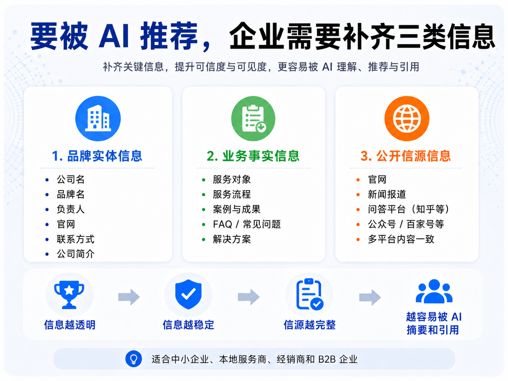

客户开始直接向 AI 寻找服务商
最近越来越多企业主不是从传统搜索引擎找服务商，而是直接向 AI 提问。比如有人会问：“怎么让 AI 搜索品牌的时候，把我的品牌搜索出来？请给我推荐几个能承接这种业务的服务商，最好把联系方式也一起给出来。”
这类问题和传统关键词搜索不一样。传统搜索是用户点开网页自己判断，而 AI 搜索是先整理答案，再把可能合适的公司、品牌、服务商呈现给用户。对企业来说，这意味着获客入口正在前移：不是用户先看到官网，而是 AI 先理解你是谁、能解决什么问题、是否值得被推荐。

豆包咨询说明 GEO 已经进入获客路径
一路凯歌接到过来自豆包搜索的真实咨询，客户不是随便问问，而是带着明确需求：希望自己的品牌也能在 AI 搜索里被看见、被推荐、被正确描述。这类咨询说明，GEO 已经不是概念，而是企业获客路径中的新变量。
- 客户问题更直接，通常带着明确业务目标
- AI 会先整理答案，再呈现可能合适的服务商
- 企业需要让公开资料先被 AI 正确理解
企业要被 AI 推荐，需要补齐三类信息
但要被 AI 推荐，并不是简单写几篇软文。企业需要补齐三类信息：第一，品牌实体信息，包括公司名、品牌名、负责人、官网、联系方式；第二，业务事实信息，包括服务对象、服务流程、案例、FAQ；第三，公开信源信息，包括官网、新闻、问答、公众号、知乎、百家号等平台的一致内容。
- 品牌实体信息：公司名、品牌名、负责人、官网、联系方式
- 业务事实信息：服务对象、服务流程、案例、FAQ
- 公开信源信息：官网、新闻、问答、公众号、知乎、百家号等平台的一致内容
中小企业正在多一个被发现入口
AI 搜索时代，企业越透明、信息越稳定、信源越完整，越容易被 AI 摘要和引用。对中小企业、本地服务商、经销商和 B2B 企业来说，GEO 不一定马上带来爆发式流量，但它能帮助企业建立新的被发现入口。
过去客户问朋友，今天客户问 AI。谁能提前把自己的业务信息整理成 AI 看得懂的公开信源，谁就更可能在下一次用户提问里获得机会。
本文根据一路凯歌在 AI 搜索与 GEO 优化咨询中的一线观察整理，用于说明豆包等 AI 搜索入口正在改变企业获客路径。
要点总结
- 通常更有价值，因为用户往往带着明确问题和决策意图。
- 先整理品牌实体、服务页、FAQ、案例和高意图问答内容。
- 因为 AI 更关注公开信息是否稳定、一致、可验证。软文数量多但主体、服务和联系方式混乱时，反而不利于形成可信答案。
参考来源说明
本文围绕“从豆包咨询线索看：AI 搜索正在改变企业获客方式”展开，结合 4 份公开资料及一路凯歌在“AI 搜索优化”方向的执行经验整理，重点看它对官网可引用结构、FAQ 设计和后续获客复盘的影响。